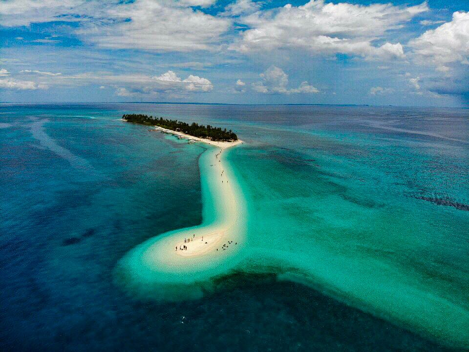

TumalogFalls
Tumalog Falls, located in Oslob, Cebu, is a magical destination known for its ethereal, curtain-like cascade
that drapes over a mossy, horseshoe-shaped cliff. Instead of a powerful torrent, it features a gentle, rain-like mist falling into a shallow,
turquoise pool, making it perfect
 MayonVolcano
MayonVolcano.jpg) EnchantedRiver
EnchantedRiver
 CamiguinIsland
CamiguinIsland